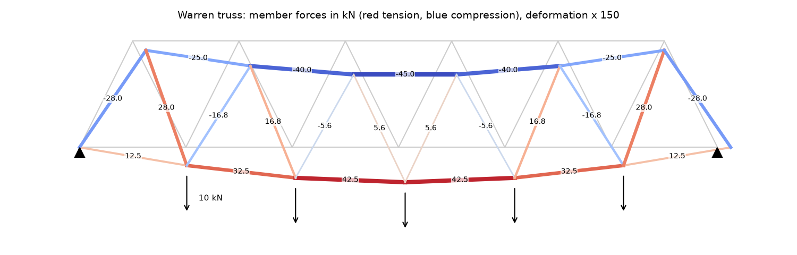
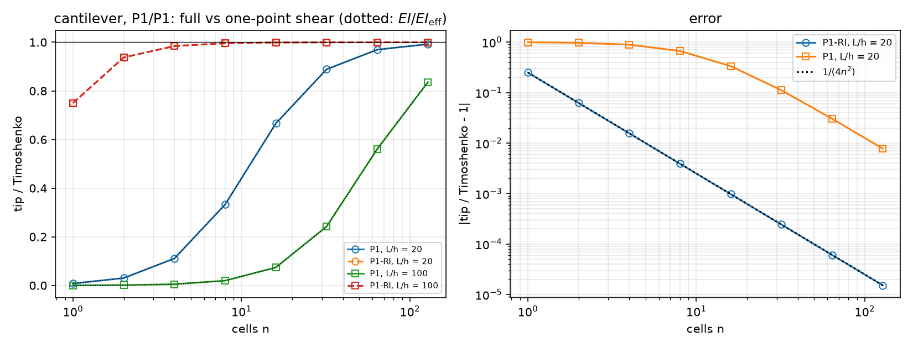
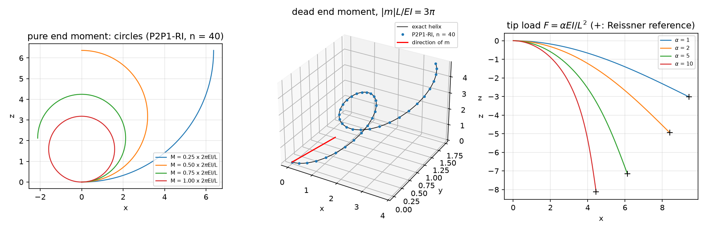

AI-based Materials and Process Simulation II
Week 07 — Beams: Trusses · 3D Timoshenko Frames · Finite Rotations
Process Systems Laboratory
Department of Chemical and Biomolecular Engineering, SeoulTech
Today
| Part | Topic | Time |
|---|---|---|
| Quiz on Week 6 (closed-AI) | 10 min | |
| A | Trusses — a 1D mesh in 2D/3D without Gmsh, the axial strain from the tangent, the method of joints | 35 min |
| B | 3D Timoshenko frames — generalized strains, the local frame, shear locking, torsion | 45 min |
| C | Finite rotations — \Lambda=\exp\widehat{\boldsymbol\theta}, energy → SNES, exact circle, helix and elastica, Newton | 60 min |
| D | The sources re-run · LLM pitfalls · assignment | 20 min |
Lab notebook: W07_lab.ipynb · Assignment: W07_HW7.ipynb (due before Week 8) · Week 8: midterm (first half)
Week 6 in one slide
- Semi-discrete dynamics: modes decouple; Newmark (\tfrac14,\tfrac12) is unconditionally stable and conserves energy; central difference needs \omega_{\max}\Delta t\le2.
- Rayleigh damping \zeta_i=\alpha_M/2\omega_i+\alpha_K\omega_i/2; SLEPc shift-invert for frequencies; buckling as (-K_G)\phi=\theta K\phi.
Today: structures whose members are long and thin. Instead of meshing them in 3D, we reduce them to their axis: a 1D mesh in 2D or 3D. Three models of increasing richness — the truss (axial force only), the Timoshenko beam (six section forces), the geometrically exact rod (any rotation).
Part A · Trusses
Three line models
| model | unknowns at a node | strains | valid for |
|---|---|---|---|
| truss | \mathbf u (2 or 3) | \varepsilon=\boldsymbol t\cdot\mathbf u' | pin-jointed members, axial force only |
| Timoshenko beam / frame | \mathbf u, \boldsymbol\theta (6) | \varepsilon, two shears, two curvatures, twist | small rotations, rigid or welded joints |
| geometrically exact rod | \mathbf u, \boldsymbol\theta (6) | \boldsymbol\Gamma=\Lambda^\top(\boldsymbol t_0+\mathbf u')-\boldsymbol t_0, \mathbf K=T^\top\boldsymbol\theta' | any rotation, small strain |
'=d/ds along the member. The cross-section enters only through ES, \kappa GS, EI_1, EI_2, GJ — computed once (Saint-Venant J for a rectangle, \kappa by Cowper).
A 1D mesh in 2D/3D — no Gmsh
pts, cells = joints + inner points, [(i, j), ...] # rank 0 only; empty arrays elsewhere
msh = mesh.create_mesh(comm, cells, ufl.Mesh(basix.ufl.element("Lagrange", "interval", 1, shape=(gdim,))), pts)
msh.topology.create_connectivity(0, 1) # vertex -> cell, for locate_dofs_topological(V, 0, vertices)
J = ufl.Jacobian(msh); t = ufl.as_vector([J[i, 0] for i in range(gdim)]); t = t / ufl.sqrt(ufl.dot(t, t))
eps = lambda w: ufl.dot(ufl.dot(ufl.grad(w), t), t) # axial strain t . grad(u) tufl.gradon a manifold mesh is the tangential gradient; \nabla\mathbf u\,\boldsymbol t=d\mathbf u/ds. The sign of \boldsymbol t depends on the cell orientation — use it in even powers.- Joint loads go straight into the vector at the joint DOFs (
locate_dofs_topological(V.sub(c), 0, vertex)):locate_dofs_geometricalrefuses sub-spaces in 0.11. - The source used Gmsh with
setTransfiniteCurve(lt, 2)— one cell per member, which matters (next slide).
The Warren truss

13 joints, 23 members, 3 reactions: 2j=m+r — statically determinate. Min u_y=-2.1882 mm, max |u_x|=0.8333 mm (the source’s values); member forces = the method of joints to \sim10^{-10} N (round-off), whatever ES is. Cut each member into two cells: the middle node has no stiffness across the member → zero pivot, KSP reason −11, |u|=\infty.
Trusses and frames run serially
A vertex shared by 3 or more cells is duplicated in DOLFINx 0.11 when those cells end up on different ranks:
| mesh | vertices, 1 rank | 2 ranks | 3 ranks |
|---|---|---|---|
| Warren truss | 13 | 21 (Colab: 17) | — |
| star of 6 cells | 7 | 8 | 7 |
| ladder (2\times11 joints) | 22 | 25 | 30 |
| chain (every vertex in ≤ 2 cells) | 21 | 21 | 21 |
The structure falls apart (reason −11, \infty), with no error message. Run trusses and frames with -np 1 (they are small anyway). A chain — a single beam or rod — is fine in parallel (the rod of Part C runs on 2 ranks).
Part B · 3D Timoshenko frames
Generalized strains in the local frame
Local frame per member: \boldsymbol t, \mathbf a_1=\dfrac{\mathbf{up}\times\boldsymbol t}{|\mathbf{up}\times\boldsymbol t|}, \mathbf a_2=\boldsymbol t\times\mathbf a_1.
| strain | expression | resultant |
|---|---|---|
| axial | \varepsilon=\boldsymbol t\cdot\mathbf u' | N=ES\,\varepsilon |
| shear | \gamma_1=\mathbf a_1\cdot\mathbf u'-\mathbf a_2\cdot\boldsymbol\theta, \ \gamma_2=\mathbf a_2\cdot\mathbf u'+\mathbf a_1\cdot\boldsymbol\theta | Q_\alpha=\kappa GS\,\gamma_\alpha |
| bending | \chi_1=\mathbf a_1\cdot\boldsymbol\theta', \ \chi_2=\mathbf a_2\cdot\boldsymbol\theta' | M_1=EI_1\chi_1 (I_1=\int x_2^2dA), M_2=EI_2\chi_2 |
| twist | \tau=\boldsymbol t\cdot\boldsymbol\theta' | T=GJ\,\tau |
a(\mathbf u,\boldsymbol\theta;\mathbf v,\boldsymbol\varphi)=\int\big(N\varepsilon_v+Q_1\gamma_{1v}+Q_2\gamma_{2v}+M_1\chi_{1v}+M_2\chi_{2v}+T\tau_v\big)\,ds on a mixed space (\mathbf u,\boldsymbol\theta). Rectangle b\times h with h along \mathbf a_2: I_1=bh^3/12 (deflection along \mathbf a_2) — the source’s comment “(weak)” for it is wrong for h>b.
Shear locking

P1 w, P1 \theta, exact integration: on a cell the shear strain w'-\theta cannot vanish when \theta varies, and \int\kappa GA\gamma^2 adds \kappa GA\,\ell^2/12 to EI — the dotted curves, exact to 6 digits. Cure: integrate the shear terms with one point (metadata={"quadrature_degree": 0}), or \mathbf u in P2.
Locking in numbers
The source’s cantilever: L=10, b\times h=0.3\times0.5 m, F=-1 kN; Euler–Bernoulli -0.5079 mm, Timoshenko -0.5089 mm.
| n | 1 | 2 | 5 | 10 | 100 |
|---|---|---|---|---|---|
| P1/P1 full integration | 0.0077 | 0.030 | 0.163 | 0.438 | 0.98734 |
| P1/P1 one-point shear = P2/P1 | 0.7505 | 0.9376 | 0.9900 | 0.9975 | 0.999975 |
- The source: “n=100: -0.5025 mm, 1.07 % vs Euler–Bernoulli ✅”. It is 0.98734 of Timoshenko — still locked. A Timoshenko result below Euler–Bernoulli is the signature.
- The locking-free elements give exactly w_{EB}(1-\frac1{4n^2})+w_{\rm shear}: shear exact, bending second order. P2/P1 = P1-RI to all digits.
Frames: torsion and the reference vector
L-frame (legs a=2, b=1, circle r=0.05, F=-1 kN at the end): w=\frac{F(a^3+b^3)}{3EI}+\frac{Fab^2}{GJ}+\frac{F(a+b)}{\kappa GA} = 53.5 % bending + 46.4 % torsion + 0.1 % shear. The torque Fb is constant in leg 1 → its twist is linear → exact in P1 for every n (-2.522227\times10^{-3}). FEM n=16: 0.99948 of the exact deflection.
Portal frame (columns along \mathbf e_z) with up = e_z: \mathbf a_1=\mathbf e_z\times\boldsymbol t=\mathbf 0, 0/0 → NaN → MUMPS fails (reason −11) — silently. The source’s cross(ez, t) has this flaw. Take up not parallel to any member, or one per member. With up = e_y: sway / slope–deflection = 0.988 (n=8), 1.0023 (n=64; FEM also stretches and shears), 0.9997 (rigid).
Part C · Finite rotations
Rotation vector and exponential map
Rotation \Lambda\in SO(3) of the cross-section, parametrised by \boldsymbol\theta (axis × angle), \varphi=|\boldsymbol\theta|, S=\widehat{\boldsymbol\theta} (S\mathbf a=\boldsymbol\theta\times\mathbf a):
\Lambda=I+\frac{\sin\varphi}{\varphi}S+\frac{1-\cos\varphi}{\varphi^2}S^2,\qquad T=I+\frac{1-\cos\varphi}{\varphi^2}S+\frac{\varphi-\sin\varphi}{\varphi^3}S^2
Material strains (total formulation, reference axis \boldsymbol t_0):
\boldsymbol\Gamma=\Lambda^\top(\boldsymbol t_0+\mathbf u')-\boldsymbol t_0\ \ (\text{axial},\ \text{2 shears}),\qquad \mathbf K=T^\top\boldsymbol\theta'\ \ (\text{twist},\ \text{2 curvatures})
\Psi=\tfrac12\boldsymbol\Gamma\cdot C_N\boldsymbol\Gamma+\tfrac12\mathbf K\cdot C_M\mathbf K, C_N=\operatorname{diag}(ES,GS,GS), C_M=\operatorname{diag}(GJ,EI,EI). Small \boldsymbol\theta: \Lambda\approx I+S and the strains of Part B return. \varphi\to0: regularise with \sqrt{\boldsymbol\theta\cdot\boldsymbol\theta+10^{-12}}.
Energy → residual → SNES
w = fem.Function(V); u, th = ufl.split(w) # V = (P2 vector) x (P1 vector), mesh = the x axis in 3D
Lam, T = expmap(th)
Gam = Lam.T * (t0 + u.dx(0)) - t0; Kap = T.T * th.dx(0)
dxN = ufl.Measure("dx", domain=msh, metadata={"quadrature_degree": 2}) # 2-point rule for the force term
Pi = 0.5 * ufl.dot(Gam, CN * Gam) * dxN + 0.5 * ufl.dot(Kap, CM * Kap) * dx - ufl.dot(F, u) * ds(tip) - ufl.dot(M, th) * ds(tip)
problem = NonlinearProblem(ufl.derivative(Pi, w, ufl.TestFunction(V)), w, bcs=bcs, petsc_options_prefix=f"rod{k}_",
petsc_options={"snes_linesearch_type": "basic", "snes_divergence_tolerance": 1e12, ...})
for t in steps: F.value[:] = t * F_max; problem.solve() # total loads; each step starts from the lastufl.derivativeof \Psi is fine: \mathbf K contains \boldsymbol\theta', its variation contains \delta\boldsymbol\theta' — no second derivative appears. (The source’s “AD would need d^2\theta/ds^2” is wrong, and its own code usesderivative.)- The tip is a boundary vertex of the chain:
ds(tip)integrates a point — parallel-safe.
Three exact answers
- Circle. End moment M about -\mathbf e_y, no force: \boldsymbol\Gamma=0, \mathbf K=(0,M/EI,0) — an arc, for any ES, GS. M=2\pi EI/L closes it.
- Helix. EI=GJ, dead end moment \mathbf m: the spatial curvature is \mathbf m/EI, so \boldsymbol\theta(s)=s\,\mathbf m/EI exactly (linear in s!) and the centre line is a helix about \mathbf m.
- Elastica. Dead tip force: shooting on EI\varphi'=F(x_{\rm tip}-x) (inextensible), or with \varepsilon=N/ES, \gamma=Q/GS (Reissner). With ES=GS: \varepsilon\mathbf d_1+\gamma\mathbf d_2=\frac F{ES}(0,-1) — a uniform extra translation, w_{\rm Reissner}=w_{\rm elastica}+FL/ES exactly.
For a rotation about a fixed axis, T^\top\mathbf M=\mathbf M: the simple load term \mathbf M\cdot\boldsymbol\theta(L) has the same equilibrium as a true dead moment (HW7 Q1c).
The rod, verified

L=10, EI=GJ=100, ES=GS=10^4, P2P1-RI, n=40. Circle: tip errors \le1.3\times10^{-7} up to the full turn (2–3 Newton iterations per step). Elastica, \alpha=FL^2/EI=10: w/L = 0.81150 (Reissner 0.81161, elastica 0.81061); linear theory would say 3.33.
Locking at large rotation
Helix, |\mathbf m|L/EI=3\pi, tip error |\mathbf u-\mathbf u_{\rm ex}|:
| element | n=10 | 20 | 40 | 80 | rate |
|---|---|---|---|---|---|
| P1/P1, one-point force term | 6.4\times10^{-2} | 1.6\times10^{-2} | 3.9\times10^{-3} | 9.8\times10^{-4} | 2 |
| P2/P1, two-point force term | 3.2\times10^{-4} | 2.0\times10^{-5} | 1.2\times10^{-6} | 7.6\times10^{-8} | 4 |
| P2/P1, full integration (the source’s) | 4.86 | 1.62 | Newton fails | Newton fails | — |
- With the reduced rule \boldsymbol\Gamma can vanish at the quadrature points: \boldsymbol\theta is then exact (10^{-15}), and \mathbf u is the centre line integrated by the midpoint / 2-point Gauss rule.
- P2/P1 is locking-free in the linear theory only: in a curved state \boldsymbol\Gamma is not a polynomial, and the stiff force term locks. P1/P1 full: elastica w/L 0.209 instead of 0.302.
Newton for rods
| symptom | cause | fix |
|---|---|---|
| reason −9 (DIVERGED_DTOL) after 1 iteration, stiff rod (ES\,L^2/EI=10^7) | the first update is the linear solution: it stretches a near-inextensible rod, residual 1\to1.3\times10^6 | snes_divergence_tolerance: 1e12 — Newton then converges in 6–8 |
snes_divergence_tolerance: -1 |
PETSc 3.25 ignores it (stays 10^4) | a large positive value |
| reason −5 after 50 iterations, rod hardly moved | PETSc’s default bt line search cuts every step to a sliver |
snes_linesearch_type: basic |
an option of an earlier solver (e.g. snes_monitor) acts on a new one |
options live in a global database under the prefix | a new prefix per problem |
The source’s rod (ES\,L^2/EI=10^4), first step \alpha=1: basic 7 iterations, w/L=0.3018; bt reason −5 after 50, w/L=0.038.
Part D · Sources · pitfalls · assignment
The two modules
frame.py |
rod.py |
|---|---|
line_mesh(X, members, n) → mesh, member of each cell |
Rod(L, n, ES, GS, GJ, EI, elem) — "P1-RI", "P2P1-RI" (default), "P1", "P2P1" |
Truss(X, members, ES, n, eps0): .fix, .load, .solve, .forces() |
.solve(F=, M=) (total tip loads) → (reason, its); .tip(), .centerline(), .energy() |
Frame(X, members, sec, n, elem, up): .clamp, .load(F, M), .at(x), .resultants() |
circle_tip, helix_tip, reissner (shooting; ES=GS=\infty: elastica) |
rect(b, h, E, nu), circ(r, E, nu) → ES, \kappa GS, EI_{1,2}, GJ |
expmap(th) → \Lambda, T; rodrigues (NumPy) |
The original sources, re-run on 0.11
- Truss: reproduced (-2.1882, 0.8333 mm); “midpoint transverse DOFs unconstrained → singular” is right.
- 3D Timoshenko: the n=10 / n=100 values (-0.2230 / -0.5025 mm) are P1/P1 locking, not “✅ 1.07 % vs EB”. The local frame \mathbf e_z\times\boldsymbol t breaks for vertical members. The summary “
u_sol.x.array[2::3](stride 3)” is wrong for the mixed space — the code’s own second extraction uses[2::6]. - Finite rotations: step 1 reproduced to every digit, u_z=-1.4997 m. Its “10 % error = shear locking” compares with FL^3/3EI=1.6667 m but step 1 also has the moment: the linear answer to both loads is -1.4749 m, and P2/P1 with and without reduced integration agree. The curvature history
curv_oldis never updated. Force and moment both act in the x–z plane, so the tip path is planar (u_y\equiv0) — not a helix.
What goes wrong in beam codes
| Pitfall | Measured symptom (this week) |
|---|---|
| Members cut into several truss cells | zero pivot, reason −11, |u|=\infty |
A frame or truss with mpirun -n 2 |
vertices duplicated (13 → 17–21), reason −11 |
| Local frame from \mathbf e_z\times\boldsymbol t with a vertical member | NaN in the matrix, reason −11 |
| I_1, I_2 attached to the wrong local axis | the bending part off by (h/b)^2 (HW7: 4×) |
| Polar moment I_p instead of Saint-Venant J for a rectangle | torsion too stiff (J=4.6\times10^{-5} vs I_p=8.3\times10^{-5} m⁴) |
| Result compared with Euler–Bernoulli instead of Timoshenko | locking hidden: “1.07 % ✅” is 1.27 % locked |
| SNES reason not printed | DTOL after one iteration, or bt stalling, look like answers |
snes_divergence_tolerance: -1 |
ignored in PETSc 3.25 |
Prompting for a beam model
- State the model (truss / Timoshenko / geometrically exact) and the element with its integration rule; ask for a locking check against Timoshenko, not Euler–Bernoulli.
- Give the section by ES, \kappa GS, EI_1, EI_2, GJ and say which local axis each belongs to; ask for the local frame with a reference vector that cannot be parallel to a member.
- Trusses and frames: one cell per truss member,
-np 1, joint loads at vertex DOFs, an independent statics check (method of joints, force method). - Finite rotations: the strain definitions written out, the SNES options (line search, divergence tolerance), the reason printed every step, and an exact test (circle, helix).
- Keep the exact answers next to the production run: Timoshenko tip, slope–deflection, circle, helix, Reissner.
Assignment HW7 (due before Week 8)
| Q | Topic | Points |
|---|---|---|
| 1 | Truss singularity, the locked Timoshenko element, rotations about a fixed axis (theory) | 20 |
| 2 | Linear: an indeterminate truss with lack of fit, a rectangular L-frame, locking vs slenderness | 30 |
| 3 | Finite rotations: element convergence on the helix, stiff rods and Newton, the source’s load case | 30 |
| 4 | Debugging an LLM-generated rod script | 20 |
Week 8: midterm (first half) — Weeks 1–7. No separate quiz; practice questions on this week are handed out for the review.
Summary
| Concept | Key point | DOLFINx 0.11 |
|---|---|---|
| 1D mesh in 2D/3D | joints + members, no Gmsh; tangent from the Jacobian | mesh.create_mesh with an interval element of shape=(gdim,) |
| Truss | one cell per member; statics checks forces | vertex DOFs: locate_dofs_topological(V.sub(c), 0, v); -np 1 |
| Timoshenko | 6 strains in (\boldsymbol t,\mathbf a_1,\mathbf a_2); P1/P1 locks by \kappa GA\ell^2/12 | one-point shear quadrature_degree: 0, or \mathbf u in P2 |
| Finite rotations | \boldsymbol\Gamma=\Lambda^\top(\boldsymbol t_0+\mathbf u')-\boldsymbol t_0, \mathbf K=T^\top\boldsymbol\theta' | energy → ufl.derivative → NonlinearProblem |
| Large rotation | reduced rule for the force term; exact tests | basic line search, divergence tolerance 10^{12}, a prefix per problem |
Next week: midterm · Reissner–Mindlin plates · project proposal.